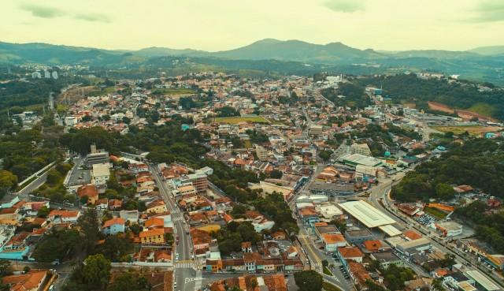

Santana de Parnaíba é um município do estado de São Paulo, localizado na Zona Oeste da Região Metropolitana de São Paulo, em conformidade com a lei estadual nº 1.139, de 16 de junho de 2011 e consequente Plano de Desenvolvimento Urbano Integrado da Região Metropolitana de São Paulo (PDUI).

Santa de Parnaíba

Hino de Santa de Parnaíba
Santana de Parnaíba
Berço de heróis consagrados
Cidade dos Bandeirantes
Deste solo muito amado
Com orgulho festejamos
O dia dos Bandeirantes!
SALVE! ANHANGUERA, BORBA GATO,
FERNÃO e SUZANA DIAS
BRAVOS HERÓIS DO PASSADO.
Daqui partiram as bandeiras
Por rincões ignorados
Levando no peito a cruz
Nos lábios o nome amado
De Santana de Parnaíba
Essa terra alvissareira.
VIVA! ESSES HOMENS DESTEMIDOS
TODOS QUE ENGRANDEÇAM
NOSSA TERRA BRASILEIRA!